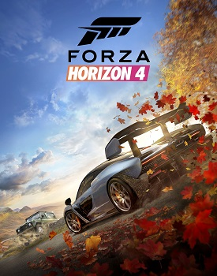

Call of Duty: World at warМиссии идут с 1942 по 1945 год. На протяжении всей сюжетной линии игра идёт за двух персонажей. Первый — это рядовой морской пехоты Миллер. Основной персонаж почти всех миссий за США (не считая только одной миссии — за старшину Локка, являющийся третьим персонажем). Второй — это рядовой Красной армии Дмитрий Петренко, представляющий СССР. Всего в игре 15 сюжетных миссий. Американская часть сюжета начинается в Японии, а заканчивается на Окинаве. скачать торрент |

Call of Duty:Black Ops25 февраля 1968 года. Сотрудник ЦРУ Алекс Мэйсон приходит в себя в комнате допроса привязанным к стул. Он не знает, где находится и не помнит, что произошло до этого. Неизвестные люди задают ему вопросы о расположении некой номерной радиостанции и чисел, которые он постоянно слышит и видит. Постепенно память начинает возвращаться к Мэйсону. Большая часть игры представлена в виде воспоминаний Мэйсона о событиях, произошедших с 1961 по 1968 годы. скачать торрент |
Call of Duty:Black Ops IIДэвид Мэйсон (позывной «Сектор»), сын Алекса Мэйсона из первой части Black Ops, ещё в детстве потерял отца и теперь ему нужно найти убийц. Кроме того, он, как боец группы «Морских котиков», должен победить Рауля Менендеса, главного лидера террористической организации «Cordis Die». Скачать торрент |
Call of Duty:GhostsВойска Южной Америки под названием «Федерация» атакуют США. Они захватывают космический комплекс ракет под названием «ODIN», с помощью которого федерация атакует важные города: Лос-Анджелес, Сан-Диего, Сан-Франциско и т. д. скачать торрент |
Call of Duty:WWIIДействия Call of Duty: WWII происходят во времена конца Второй мировой войны, а именно с 1944 по 1945 год,в то время, когда союзные войска начали собирать силы на свой марш в Германии. Кампания охватит боевые действия в оккупированных городах Франции, Бельгии и Германии. скачать торрент |
Far Cry 3Главный герой, Джейсон Броди, отправляется с друзьями в отпуск на необычайно красивый тропический остров Рук Айленд. После парашютного прыжка, приземлившись на одном из островов архипелага, они попадают в руки к местным пиратам под руководством Вааса Монтенегро. скачать торрент |
Far Cry 4Далеко в Гималаях, среди высоких гор и широких долин, находится регион Кират. Когда-то здесь бушевала гражданская война — король Кирата и его армия противостояли националистам. Пэйган Мин (Трой Бейкер) и его люди, бывшие члены гонконгских Триад, присоединились к сторонникам короля, и с их помощью националисты были разгромлены. Однако затем Мин убил законного наследника престола и провозгласил новым королём себя самого. скачать торрент |
Far Cry 6В 1967 году на Яре произошла революция, в результате которой был свергнут президент Габриэль Кастильо. Из-за этого Яра оказалась изолированной от мира на десятилетия, а её экономика — на грани коллапса. В 2014-м на выборах побеждает сын бывшего президента, Антон Кастильо. Он обещает создать в стране рай на земле с помощью торговли Вивиро — экспериментальным препаратом для лечения рака, который производят из местного табака. скачать торрент |
Battlefield 3Американский морпех, Генри Блэкбэрн, на допросе в ЦРУ рассказывает агентам о человеке по имени Соломон и угрозе, которую он представляет для США. Ему обещают помочь, но Блэкбэрн должен сказать, откуда он знает о Соломоне. скачать торрент |
Battlefield 4Действие происходит через 6 лет после событий Battlefield 3 в 2020 году. Игрок берёт на себя роль сержанта Дэниела Рекера, бойца разведывательного подразделения, известного как группа «Tombstone» . скачать торрент |
Forza Horizon 5Во время выбора локации для новой игры разработчики с самого начала хотели сделать самую большую Forza Horizon. При этом разработчики поняли, что игровой мир должен быть не только масштабным, но и разнообразным. Поэтому в качестве места действия Horizon 5 была выбрана Мексика. скачать торрент |

Forza Horizon 4Действия игры происходят в Великобритании, игровой процесс сконцентрирован на взаимодействии между игроками. Одной из главных особенностей игры является динамическая смена сезонов, отражающая изменение времени суток и погодных условий которые непосредственно будут влиять на геймплей. скачать торрент |

Forza Horizon 3Forza Horizon 3 — гоночная видеоигра с открытым миром, за основу которого взята Австралия, карта которой в два раза больше, чем карта Forza Horizon 2, и простирается от Серферс-Парадайс до Байрон-Бей. Игра предоставляет режим кооперативного мультиплеера. скачать торрент |

Need for Speed:Most WantedИгрок может разъезжать по городу c названием Фэйрхевен, представляющий собой как широкие городские улицы и парки, так и промышленные центры и скоростные магистрали с живописными пейзажами. В игре отсутствуют строгие правила; игрок может произвольно выбирать гонки для участия. сккачать торрент |
Forza Motorsport 7Forza Motorsport 7-это гоночный автосимулятор. В нём представлены более 700 автомобилей и более 200 различных конфигураций в гонке на 30 мест, в том числе из Forza Motorsport 6; вымышленная уличная трасса в Дубае является одной из новых схем и нескольких треков, возвращающихся из «Forza 4» сккачать торрент |
Need for Speed: No LimitsДействия игры происходят в вымышленном городе Блэкридж. Игровой процесс основывается на уличных гонках с полицейскими преследованиями и несколькими режимами. На выбор игроку представлены различные автомобили.В игре представлены возможности тюнинга машин. сккачать торрент |

PortalPortal — компьютерная игра в жанре головоломки от первого лица, разработанная американской компанией Valve Corporation и выпущенная 10 октября 2007 года на платформах Windows и Xbox 360 в составе сборника The Orange Box. Портированная версия для приставки PlayStation 3 разрабатывалась британской студией EA UK и была выпущена 11 декабря 2007 года. скачать торрент |

Portal:IIPortal 2 — компьютерная игра в жанре головоломки от первого лица, продолжение игры Portal, разработанная компанией Valve Corporation. Игра была официально анонсирована Valve 5 марта 2010 года. Изначально её выпуск планировался осенью того же года, однако после нескольких переносов датой выхода Portal 2 было назначено 18 апреля 2011 года. скачать торрент |
ТетрисТе́трис — компьютерная игра, первоначально изобретённая и разработанная советским программистом Алексеем Пажитновым. Игра была выпущена 6 июня 1984 года — в это время Пажитнов работал в Вычислительном центре Академии наук СССР. «Тетрис» представляет собой головоломку, построенную на использовании геометрических фигур «тетрамино» — разновидности полимино, состоящих из четырёх квадратов. скачать торрент |

КосынкаИграется одной колодой в 52 карты. Цель игры — разложить карты по мастям в порядке от туза до короля в четыре стопки (их иногда называют базовыми, или «домами»). Карту можно перекладывать на другую рангом выше, но другого цвета (чёрного или красного). В каждую из четырёх базовых стопок (домов), по которым необходимо разложить все карты, сначала кладутся тузы, затем двойки, тройки и так далее до короля. скачать торрент |